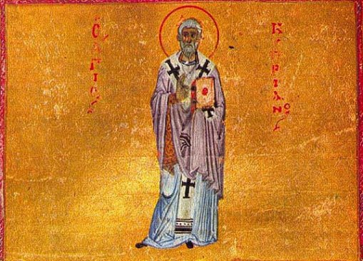
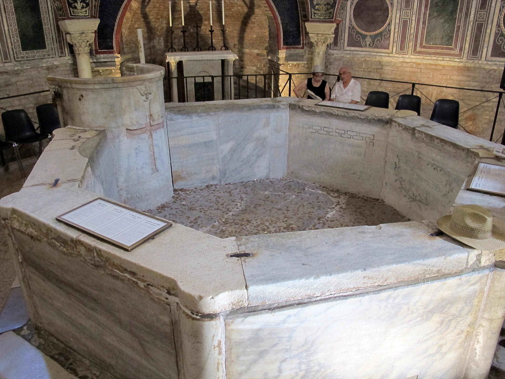

Las dos entregas anteriores han trabajado con textos: un relato hebreo que no dice lo que se le atribuye, y un pronombre griego que en latín se resolvió en una dirección. Esta trabaja con algo distinto, y probablemente más determinante: con lo que la gente estaba haciendo.
Porque en algún momento de los primeros siglos las iglesias empezaron a bautizar a recién nacidos. Y la fórmula del bautismo decía, y sigue diciendo, «para la remisión de los pecados». De ahí sale una pregunta que no es teológica sino de sentido común, y que alguien tenía que responder: ¿de qué pecado? Un recién nacido no tiene ninguno propio.
Cipriano, hacia el año 253
La respuesta más antigua que se puede documentar es mucho más temprana de lo que casi nadie espera, y no viene de Agustín: viene de Cipriano de Cartago, siglo y medio antes.
La ocasión es una consulta menuda. Un obispo llamado Fido preguntó si había que esperar al octavo día para bautizar, por analogía con la circuncisión. Cipriano responde en una carta —la Epístola 64, que en la numeración inglesa antigua aparece como la 58— y no responde solo: la respaldan unos sesenta y seis obispos reunidos en sínodo. La respuesta es que no hay que esperar, porque no se puede negar «la misericordia y la gracia de Dios a nadie nacido de hombre».
Pero lo que importa son las dos frases con las que lo razonan. La primera dice que el recién nacido, «habiendo nacido según la carne conforme a Adán, ha contraído el contagio de la muerte antigua en su mismísimo nacimiento». Y la segunda es la que deja sin aire: al niño bautizado «le son remitidos, no sus propios pecados, sino los pecados de otro». En latín, aliena peccata.
Es difícil exagerar lo que hay ahí. Hacia el 253, un sínodo africano está razonando ya que un neonato recibe la remisión de un pecado ajeno contraído por nacimiento. El armazón conceptual está montado. Lo que falta es el edificio.

Y los materiales no son el edificio
Ésta es la distinción que hace decente todo este capítulo, y se la debemos a un trabajo de Anthony Dupont de 2017 que examina exactamente esto: cuánto pecado original hay en Tertuliano y en Cipriano antes de Agustín.
Tertuliano maneja las expresiones vitium originis y tradux peccati —algo así como «vicio de origen» y «esqueje del pecado»—, que suenan tremendamente agustinianas. Pero acentúa el libre albedrío y la responsabilidad individual. Y hay un dato que lo remata: Tertuliano desaconsejaba bautizar niños. Lo dice en su tratado sobre el bautismo. Eso encaja mal, muy mal, con una noción de culpa heredada en el neonato: si el niño naciera reo, retrasar su bautismo sería temerario.
Cipriano presenta la tensión inversa. Apoya el bautismo infantil y lo vincula al pecado de Adán, como acabamos de ver; pero afirma también, en otro lugar, que nadie puede ser hecho culpable por otro. Las dos cosas conviven en el mismo autor sin que él parezca notar el problema, porque el problema todavía no se ha planteado.
La conclusión de Dupont es la formulación exacta que hace falta: ambos comparten con Agustín cierto marco conceptual común sobre las consecuencias del pecado, pero sus teologías siguen siendo fundamentalmente distintas de la doctrina sistemática del pecado original y su culpa heredada. Los materiales estaban ahí. El edificio no.

Agustín usa la práctica como prueba
Siglo y medio después, cuando la polémica estalla, Agustín hace algo muy inteligente: no argumenta desde la especulación, argumenta desde lo que la Iglesia ya hace. Y lo hace en la primera de sus grandes obras antipelagianas, de 412, cuyo título completo incluye ya la cuestión: sobre los méritos y la remisión de los pecados y sobre el bautismo de los niños.
Su argumento es una pregunta encadenada, y es demoledora en su propio terreno: ¿por qué se llevan los niños a la fuente bautismal, si no es para asegurarles la entrada en el Reino? ¿Y por qué se les somete a exorcismos, si no han de ser librados del diablo? La práctica está ahí, es antigua y es universal. Si el niño no trae nada de qué ser librado, ¿qué está haciendo la Iglesia con él?
Nótese la dirección del razonamiento. No va del dogma a la práctica: va de la práctica al dogma. Y ésa es exactamente la cuestión que hay que examinar ahora.

¿La práctica generó la doctrina?
Aquí hay una discusión real y no la vamos a cerrar.
La tesis fuerte es de Pier Franco Beatrice, en un libro traducido al inglés en 2013: el rito genera la doctrina. Y añade una propuesta más audaz todavía, que conviene presentar como lo que es —una hipótesis—: que la doctrina del pecado hereditario y del bautismo infantil se origina en medios encratitas heterodoxos, que rechazaban el cuerpo y la procreación y teorizaron que el cuerpo está contaminado desde el nacimiento, y que de ahí se infiltró en la ortodoxia norteafricana.
Y hay una crítica publicada que conviene leer junto a ella. Isabella Image elogia la erudición de Beatrice pero objeta tres cosas: que la teoría descansa en una base textual limitada; que invierte la causalidad, porque la práctica probablemente precedió a la teología en lugar de derivarse de ella; y que si el encratismo norteafricano hubiera sido determinante, habría que explicar por qué Agustín ganó apoyo fuera de África. Su conclusión es que el encratismo es una influencia entre varias, no la fuente exclusiva.
La posición más defendible es la intermedia, y no por comodidad: práctica y doctrina se retroalimentaron. La práctica creó la presión explicativa; la explicación consolidó y universalizó la práctica; y la polémica pelagiana forzó la definición dogmática. Tres fases, tres mecanismos distintos, y ninguno reducible a los otros.
El rito genera la doctrina. Y propone además un origen encratita: medios heterodoxos que rechazaban el cuerpo y la procreación, y que teorizaron la contaminación desde el nacimiento.
Base textual limitada; la causalidad está invertida, porque la práctica precedió a la teología; y habría que explicar por qué Agustín ganó apoyo fuera de África. El encratismo es una influencia entre varias.
Tertuliano y Cipriano comparten con Agustín un marco conceptual común, pero sus teologías son fundamentalmente distintas. Los materiales estaban; el edificio no.
Práctica y doctrina se retroalimentaron: el rito creó la presión explicativa, la explicación universalizó el rito, y la polémica forzó la definición.
Cartago 418: la presión se convierte en definición
El momento en que todo esto deja de ser una discusión y pasa a ser doctrina tiene fecha y lugar. El concilio de Cartago de 418 define que los niños son verdaderamente bautizados para la remisión de los pecados, y rechaza expresamente que no contraigan de Adán ningún rastro de pecado original.
Y añade algo que conviene no pasar por alto, porque es donde la doctrina se vuelve dura: niega que exista un «lugar intermedio o feliz» para los niños no bautizados. No es una nota al pie. Es la decisión que va a pesar sobre siglos de familias, y de la que la propia tradición pasará el resto de su historia intentando escapar —con el limbo escolástico primero, y con matizaciones sucesivas después—.
Del expediente conciliar completo, con lo que cada procedimiento decidió y con lo que no decidió, se ocupa la entrega V. Antes hay que ver de cerca al hombre que puso el nombre a todo esto, y separar lo que sostuvo de las tres caricaturas que lo acompañan.
Que la práctica precediera a la explicación no convierte la explicación en un fraude, y no es una objeción a nadie. Las instituciones humanas funcionan así con enorme frecuencia: primero se hace algo porque parece bueno hacerlo, y después se articula por qué. Un rito de acogida de los recién nacidos en la comunidad tiene motivos suficientes sin ninguna teoría detrás —el miedo a la mortalidad infantil, altísima; el deseo de que el hijo pertenezca a lo mismo que los padres—. Lo que este artículo describe es cómo esa práctica, ya establecida, empujó a la teología en una dirección determinada. No que alguien la inventara para justificarse.
Es dato firme que el bautismo de niños se practicaba en el norte de África a mediados del siglo III, y el contenido de la carta de Cipriano a Fido —Ep. 64 en la numeración Hartel, Ep. 58 en la de los Ante-Nicene Fathers—, respaldada por un sínodo cartaginés de unos sesenta y seis obispos, con las expresiones «contagio de la muerte antigua» y aliena peccata. Lo es que Agustín usó la práctica bautismal como argumento explícito, en De peccatorum meritis et remissione et de baptismo parvulorum, de 412. Lo es que Tertuliano maneja vitium originis y tradux peccati y a la vez desaconsejaba bautizar niños, y que Cipriano afirma en otro lugar que nadie puede ser hecho culpable por otro: ambos datos están en el trabajo de Anthony Dupont en la Revue d'Études Augustiniennes et Patristiques 63 (2017), 1-29. Y lo es el contenido del concilio de Cartago 418, incluida la negación de un lugar intermedio o feliz.
Debate abierto: la dirección de la causalidad entre práctica y doctrina, donde no hay consenso. Beatrice defiende que el rito genera la doctrina y propone además un origen encratita; Isabella Image objeta en su reseña que la base textual es limitada y que la causalidad está invertida. Aquí se adopta la posición intermedia por ser la que menos supuestos exige, y se declara como opción y no como consenso. Las referencias de Cipriano se dan con su doble numeración precisamente porque la doble numeración induce a error con frecuencia.
Este artículo no discute si el bautismo de niños es una buena práctica ni si la doctrina que lo explicó es verdadera. Describe el orden en que aparecieron las cosas, que es una pregunta histórica y tiene respuesta documental. Y conviene subrayar algo que el relato puede hacer perder de vista: detrás de todo esto hay padres que llevaban a sus hijos a una pila porque la mortalidad infantil era altísima y querían que el niño perteneciera a lo mismo que ellos. Las doctrinas se discuten en concilios, pero empiezan en sitios como ése.